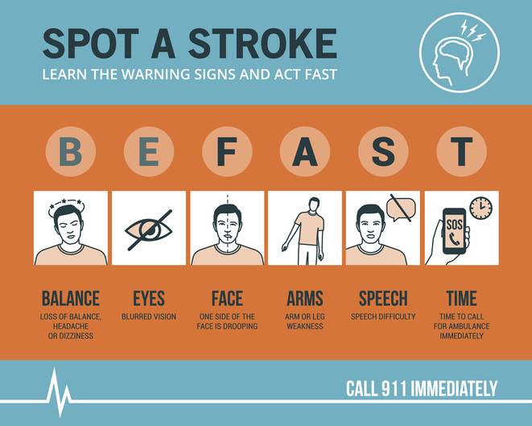

What is a stroke?
A brain stroke refers to permanent brain tissue damage caused by insufficient blood flow, also known as ischemia.
Types of Stroke
- Ischemic Stroke: Caused by a blockage in an artery.
- Hemorrhagic Stroke: Caused by a bleeding in the brain.
- Transient Ischemic Attack (TIA): A temporary blockage, often called mini-stroke.
How to Spot a Stroke
Source: Harvard Health Publishing
Common Symptoms
- Numbness or weakness, especially on one side
- Confusion
- Speech and vision problems
- Dizziness, loss of balance or conscience
- Headache
Treatment and Recovery
Treatment depends on the type of stroke. Recovery may include medication, physical and occupational therapy, resting and cognitive exercises.
Tips for Recovery
- Follow your doctor's instructions
- Take your medications, right pill, right dose, right time
- Stay active, but avoid extreme exercises
- Practice cognitive exercises and mental stimulation, like memory games
- Keep a balanced diet and stay hydrated
- Seek support from family, friends, or professionals
Source: Käypähoito
Virtual Doset
Your Medicines
Memory Game
Click 2 cards to find a matching pair. Great for cognitive rehabilitation!
🎉 You won! 🎉
About This App
This web application was created as a course project for a web development class. Its purpose is to support individuals recovering from a stroke by providing educational content, a virtual doset, and a memory game to aid cognitive rehabilitation.
Developer
Created by Pilar Murcia Pozuelo as part of a hands-on learning assignment. The project demonstrates responsive design, JavaScript functionality, and version control using GitHub.
Features
- Informational section about stroke types, symptoms, and recovery
- Virtual doset with localStorage
- Interactive memory game to support cognitive rehabilitation
- SPA-style navigation for good user experience
Sources & Credits
- Stroke information: Käypä hoito
- Stroke information: Terveyskirjasto
- JavaScript and LocalStorage: MDN Web Docs
- Spotting a stroke: Harvard Health Publishing
- CSS: CSS Tricks
- Memory game logic: FreeCodeCapm
- Virtual Doset: ESKO inspired
License
This project is for educational use only and not intended for clinical guidance or medical decision-making.